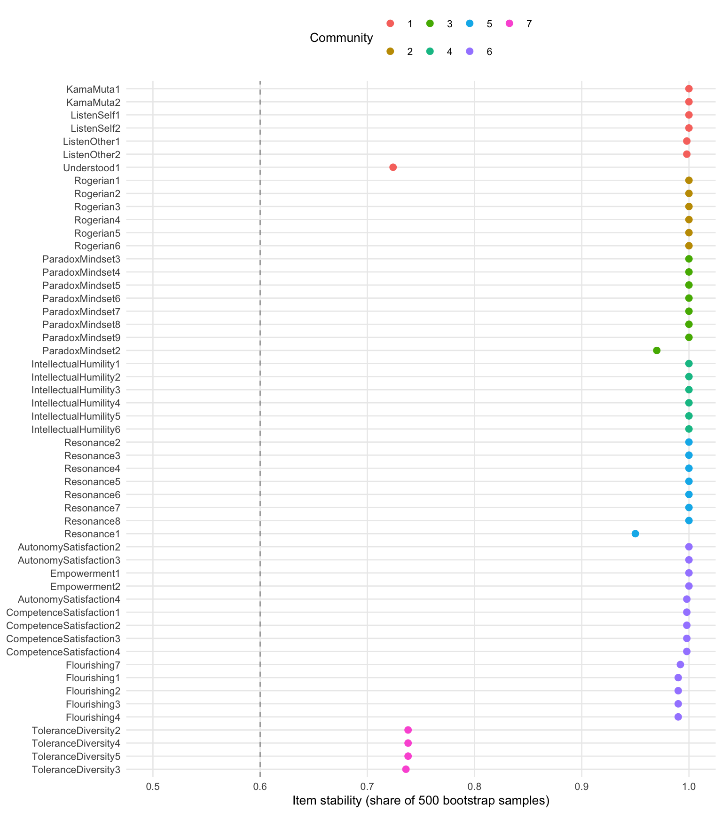

source("R/packages.R") # all packages (Chapter 1)
source("R/settings.R") # waves, conditions, folders (Chapter 1)
df <- readRDS("cache/df.rds") # one row per questionnaire (Chapter 2)
df_wide <- readRDS("cache/df_wide.rds") # one row per person (Chapter 2)
item_names <- names(select(df, ListenOther1:CompetenceNonFrustrated4))
source("R/scales.R") # the 23 scales (Chapter 2)
source("R/structure_pool.R") # the item pool (Chapter 15)16. Exploratory graph analysis
NoteAbout this chapter
Exploratory graph analysis (EGA) estimates a network of the items and finds the communities of items that hang together. Starting from the pool of Chapter 15, the chapter keeps the items whose community holds across bootstrap samples, describes the hierarchical structure of these items at each wave, and bootstraps that structure. Feeds the item-selection and structure steps of the psychometric supplement; Chapter 17 prunes the stable items further.
16.1 The method
How does EGA find communities? The graphical lasso turns the correlations of the items into a network of partial correlations: two items are linked only if they share something that the other items do not explain, and weak links are set to zero. A community detection algorithm then groups items that are densely linked with each other (Golino & Epskamp, 2017). The bootstrap repeats this on 500 samples drawn from a normal distribution with the observed correlations. An item’s stability is the share of samples in which it lands in the same community as in the observed data (Christensen & Golino, 2021).
The hierarchical version (hierEGA) adds a second level: it scores the persons on each community of items (lower order) and runs EGA on these scores, which yields factors of communities (higher order). The functions and settings:
# Exploratory graph analysis (Chapters 16 and 18). The network of the items
# comes from the graphical lasso on pairwise correlations ("auto": Pearson
# for items with eleven answer categories); walktrap finds its communities,
# louvain the two levels of the hierarchical solution. Bootstraps draw 500
# samples from a normal distribution with the observed correlations, with
# seed 42; each hierarchical solution has a seed of its own per wave.
# Louvain draws random numbers (also when EGA checks a sample for a single
# dimension), which parallel workers do not seed: the bootstraps run in one
# process (ncores = 1), so that they repeat exactly.
# the label of an item's scale (needs `scales`, Chapter 2)
scale_label <- \(item) {
scales$label[match(str_remove(item, "[0-9]+$"), scales$scale)]
}
# the answers of one wave to some items
items_at <- \(data, wave, items) {
data |>
filter(Occasion == wave) |>
select(all_of(items))
}
# a bootstrap of the network and its communities
boot_ega <- \(items) {
set.seed(42)
bootEGA(items, iter = 500, type = "parametric", corr = "auto",
model = "glasso", algorithm = "walktrap", na.data = "pairwise",
seed = 42, ncores = 1, verbose = FALSE, plot.itemStability = FALSE)
}
# how often each item falls into its own community across the bootstrap
# samples; community = the community in the observed data
item_stability <- \(boot, level = NULL) {
s <- itemStability(boot, IS.plot = FALSE)
if (!is.null(level)) s <- s[[level]]
stability <- s$item.stability$empirical.dimensions
tibble(item = names(stability),
community = as.integer(s$membership$empirical[item]),
stability = unname(stability))
}
# drop the items below the rule and bootstrap the rest again, until every
# item reaches the rule (at most 25 passes); returns each pass and the
# stability of the items that stay
converge_ega <- \(items, rule = .60, pass = 1) {
stability <- item_stability(boot_ega(items))
dropped <- stability$item[stability$stability < rule]
this_pass <- tibble(pass, items_in = ncol(items),
below = length(dropped),
min_stability = min(stability$stability),
mean_stability = mean(stability$stability),
dropped = list(dropped))
if (length(dropped) == 0 || pass == 25) {
return(list(passes = this_pass, stability = stability))
}
rest <- converge_ega(select(items, -all_of(dropped)), rule, pass + 1)
rest$passes <- bind_rows(this_pass, rest$passes)
rest
}
# hierarchical EGA of one wave: communities of items (lower order) and
# communities of the community scores (higher order)
hier_seeds <- c(T0 = 123, T1 = 456, T2 = 789, T3 = 101112)
hier_ega <- \(items, seed) {
set.seed(seed)
hierEGA(items, scores = "network", loading.method = "revised",
corr = "auto", na.data = "pairwise", model = "glasso",
plot.EGA = FALSE, verbose = FALSE)
}
hier_assignment <- \(hier) {
hier$dim.variables |>
as_tibble() |>
transmute(item = items, lower = as.integer(lower),
higher = as.integer(higher))
}
hier_size <- \(hier) {
tibble(lower = hier$lower_order$n.dim,
higher = hier$higher_order$n.dim,
TEFI = hier$TEFI)
}
# the share of item pairs that two partitions treat alike (both together or
# both apart): 1 if the partitions are the same, whatever their numbers
pair_agreement <- \(a, b) {
together_a <- outer(a, a, "==")
together_b <- outer(b, b, "==")
mean((together_a == together_b)[upper.tri(together_a)])
}
# a bootstrap of the hierarchical solution
boot_hier_ega <- \(items) {
set.seed(42)
bootEGA(items, iter = 500, type = "parametric", corr = "auto",
model = "glasso", na.data = "pairwise", EGA.type = "hierEGA",
scores = "network", loading.method = "revised", seed = 42,
ncores = 1, verbose = FALSE, plot.itemStability = FALSE)
}
# item stability at both levels, in the order of the communities
hier_item_stability <- \(boot) {
inner_join(item_stability(boot, "lower_order"),
item_stability(boot, "higher_order"),
by = "item", suffix = c("_lower", "_higher")) |>
rename(lower = community_lower, higher = community_higher) |>
arrange(higher, lower, desc(stability_lower))
}
# how often each community is found again with exactly the same items
structural_consistency <- \(boot, level = NULL) {
s <- dimensionStability(boot, IS.plot = FALSE)
if (!is.null(level)) s <- s[[level]]
consistency <- s$dimension.stability$structural.consistency
tibble(community = as.integer(names(consistency)),
consistency = unname(consistency))
}The bootstraps take a few minutes each and run in a script of their own, which also carries the steps of Chapters 17 and 18. This chapter reads its results.
# Post hoc psychometrics: the bootstraps and the chain of item selections
# of Chapters 16 to 18. The T0 questionnaires calibrate every step; the
# composites are bootstrapped again at each wave.
# Run from swt-website/ after Chapter 2: Rscript scripts/structure_pipeline.R
source("R/packages.R")
source("R/settings.R")
df <- readRDS("cache/df.rds") # one row per questionnaire (Chapter 2)
item_names <- names(select(df, ListenOther1:CompetenceNonFrustrated4))
source("R/structure_pool.R") # item pruning (Chapter 15)
source("R/structure_ega.R") # network analyses (Chapter 16)
source("R/structure_irt.R") # redundancy and IRT (Chapter 17)
source("R/structure_composites.R") # composites (Chapter 18)
# Chapter 16: bootstrap until every item is stable, then bootstrap the
# hierarchical solution of the stable items. The items are ordered by
# community and stability; louvain and the bootstrap draws depend on the
# order of the items.
pool <- structure_pool(df)
converged <- converge_ega(items_at(df, "T0", pool))
stable <- converged$stability |>
arrange(community, desc(stability)) |>
pull(item)
boot_hier <- boot_hier_ega(items_at(df, "T0", stable))
saveRDS(list(pool = pool,
passes = converged$passes,
stability = converged$stability,
stable = stable,
hier_items = hier_item_stability(boot_hier),
hier_lower = structural_consistency(boot_hier, "lower_order"),
hier_higher = structural_consistency(boot_hier, "higher_order")),
"cache/structure_ega.rds")
# Chapter 17: GRM per community and UVA on the persons who answered all
# stable items; the communities come from the bootstrap above
communities <- hier_item_stability(boot_hier) |>
select(item, community = lower, stability = stability_lower)
calibration <- items_at(df, "T0", communities$item) |> drop_na()
pruned <- community_discrimination(calibration, communities) |>
prune_items(redundant_sets(calibration))
final_pool <- pruned |> filter(keep) |> pull(item)
saveRDS(list(pruned = pruned, final_pool = final_pool),
"cache/structure_irt.rds")
# Chapter 18: the hierarchical solution of the final pool and its
# bootstrap; the composites of its communities, bootstrapped at each wave
final_T0 <- items_at(df, "T0", final_pool)
assignment <- hier_ega(final_T0, hier_seeds[["T0"]]) |>
hier_assignment() |>
arrange(higher, lower, item)
boot_final <- boot_hier_ega(final_T0)
composites <- composite_items(assignment)
boot_wave <- \(wave) boot_ega(composite_scores(df, composites, wave))
composite_boot <- tibble(wave = names(hier_seeds)) |>
mutate(boot = map(wave, boot_wave),
n = map_int(boot, \(b) b$EGA$n),
dimensions = map_int(boot, \(b) b$EGA$n.dim),
stability = map(boot, item_stability),
consistency = map(boot, structural_consistency),
frequency = map(boot, \(b) as_tibble(b$frequency))) |>
select(-boot)
saveRDS(list(assignment = assignment,
final_items = hier_item_stability(boot_final),
final_lower = structural_consistency(boot_final,
"lower_order"),
final_higher = structural_consistency(boot_final,
"higher_order"),
composite_boot = composite_boot),
"cache/structure_final.rds")ega <- readRDS("cache/structure_ega.rds")16.2 Stable items
Which items keep their community? Starting from the 71 items of Chapter 15 at T0, each pass bootstraps the network, drops every item with a stability below .60, and starts again with the rest, until no item falls below the line.
ega$passes |>
mutate(across(c(min_stability, mean_stability), \(x) round(x, 3)),
dropped = map_chr(dropped, str_flatten_comma))| pass | items_in | below | min_stability | mean_stability | dropped |
|---|---|---|---|---|---|
| 1 | 71 | 15 | 0.406 | 0.823 | ParadoxMindset1, Empowerment3, Empowerment4, Empowerment5, Agency1, Agency2, Agency3, IntellectualCapital1, IntellectualCapital2, IntellectualCapital3, AutonomySatisfaction1, RelatednessSatisfaction1, RelatednessSatisfaction2, RelatednessSatisfaction3, RelatednessSatisfaction4 |
| 2 | 56 | 3 | 0.466 | 0.947 | Belongingness1, Belongingness2, Belongingness3 |
| 3 | 53 | 0 | 0.724 | 0.972 |
After 3 passes, 53 items remain, every one of them with a stability of at least 0.72.
Which scales lose items?
dropped <- ega$passes |>
select(pass, item = dropped) |>
unnest(item) |>
mutate(scale = scale_label(item))
scale_loss <- tibble(item = ega$pool) |>
mutate(scale = scale_label(item)) |>
summarise(in_pool = n(), stable = sum(item %in% ega$stable),
.by = scale) |>
filter(stable < in_pool) |>
left_join(summarise(dropped, pass = str_flatten_comma(unique(pass)),
.by = scale),
by = "scale")
scale_loss| scale | in_pool | stable | pass |
|---|---|---|---|
| Belongingness | 3 | 0 | 2 |
| Paradox Mindset | 9 | 8 | 1 |
| Empowerment | 5 | 2 | 1 |
| Agency | 3 | 0 | 1 |
| Intellectual Capital | 3 | 0 | 1 |
| Autonomy Satisfaction | 4 | 3 | 1 |
| Relatedness Satisfaction | 4 | 0 | 1 |
Belongingness, Agency, Intellectual Capital, and Relatedness Satisfaction leave the pool entirely: their items move between communities from sample to sample.
The stable items and their communities in the last pass:
stable_items <- ega$stability |>
mutate(scale = scale_label(item),
item = fct_reorder(item, community * 10 - stability))
stable_items |>
ggplot(aes(x = stability, y = fct_rev(item),
colour = factor(community))) +
geom_vline(xintercept = .60, colour = "grey60", linetype = 2) +
geom_point(size = 2.2) +
labs(x = "Item stability (share of 500 bootstrap samples)", y = NULL,
colour = "Community") +
scale_x_continuous(limits = c(.5, 1)) +
theme_minimal(base_size = 10) +
theme(panel.grid.minor = element_blank(), legend.position = "top")
stable_items |>
summarise(items = n(),
scales = str_flatten_comma(unique(scale)),
stability = round(mean(stability), 3),
.by = community) |>
arrange(community)| community | items | scales | stability |
|---|---|---|---|
| 1 | 7 | Others Listen to Me, I Listen, Understood, Kama Muta | 0.960 |
| 2 | 6 | Rogerian Schema | 1.000 |
| 3 | 8 | Paradox Mindset | 0.996 |
| 4 | 6 | Intellectual Humility | 1.000 |
| 5 | 8 | Positivity Resonance | 0.994 |
| 6 | 14 | Flourishing, Empowerment, Competence Satisfaction, Autonomy Satisfaction | 0.996 |
| 7 | 4 | Tolerance Diversity | 0.738 |
The 53 stable items form 7 communities.
16.3 The hierarchical structure at each wave
How do the stable items group, and does the grouping repeat? hierEGA of the stable items, once per wave, each wave with a seed of its own:
hier <- imap(hier_seeds,
\(seed, wave) hier_ega(items_at(df, wave, ega$stable), seed))
hier_sizes <- hier |>
map(hier_size) |>
list_rbind(names_to = "wave") |>
mutate(questionnaires = map_int(wave, \(w) sum(df$Occasion == w)),
.after = wave)
hier_sizes |> mutate(TEFI = round(TEFI, 1))| wave | questionnaires | lower | higher | TEFI |
|---|---|---|---|---|
| T0 | 358 | 14 | 4 | -139.5 |
| T1 | 302 | 16 | 4 | -106.8 |
| T2 | 269 | 15 | 4 | -107.9 |
| T3 | 211 | 16 | 5 | -86.0 |
At T0 the 53 items fall into 14 communities under 4 higher-order factors. TEFI (total entropy fit index) compares solutions on the same items; lower is better.
The T0 solution: each higher-order factor, its communities and the scales their items come from.
assignment_T0 <- hier_assignment(hier$T0) |>
mutate(scale = scale_label(item))
assignment_T0 |>
summarise(items = n(),
scales = str_flatten_comma(unique(scale)),
.by = c(higher, lower)) |>
arrange(higher, lower)| higher | lower | items | scales |
|---|---|---|---|
| 1 | 1 | 2 | I Listen |
| 1 | 2 | 2 | Kama Muta |
| 1 | 3 | 2 | Others Listen to Me |
| 1 | 4 | 9 | Understood, Positivity Resonance |
| 1 | 7 | 8 | Paradox Mindset |
| 2 | 5 | 3 | Rogerian Schema |
| 2 | 6 | 3 | Rogerian Schema |
| 3 | 8 | 2 | Intellectual Humility |
| 3 | 9 | 4 | Intellectual Humility |
| 3 | 14 | 4 | Tolerance Diversity |
| 4 | 10 | 2 | Empowerment |
| 4 | 11 | 3 | Autonomy Satisfaction |
| 4 | 12 | 4 | Competence Satisfaction |
| 4 | 13 | 5 | Flourishing |
Across the waves. The numbers of the factors are arbitrary within each wave; what counts is which scales share a factor. The factor of each scale’s items at each wave (two numbers: the items split):
hier_by_wave <- hier |>
map(hier_assignment) |>
list_rbind(names_to = "wave")
hier_by_wave |>
mutate(scale = scale_label(item)) |>
summarise(higher = str_flatten(sort(unique(higher)), "/"),
.by = c(scale, wave)) |>
pivot_wider(names_from = wave, values_from = higher)| scale | T0 | T1 | T2 | T3 |
|---|---|---|---|---|
| I Listen | 1 | 1 | 1 | 1 |
| Kama Muta | 1 | 1 | 1 | 1 |
| Others Listen to Me | 1 | 1 | 1 | 1 |
| Understood | 1 | 1 | 1 | 1 |
| Rogerian Schema | 2 | 2 | 2 | 2 |
| Paradox Mindset | 1 | 2 | 3 | 3 |
| Intellectual Humility | 3 | 3 | 3 | 3 |
| Positivity Resonance | 1 | 1 | 1 | 4 |
| Empowerment | 4 | 4 | 4 | 5 |
| Autonomy Satisfaction | 4 | 4 | 4 | 5 |
| Competence Satisfaction | 4 | 4 | 4 | 5 |
| Flourishing | 4 | 4 | 4 | 3/5 |
| Tolerance Diversity | 3 | 3 | 3 | 5 |
How close is each wave to T0? For every pair of items: are they in the same factor or not, at T0 and at the later wave? The share of pairs on which the two waves agree (the Rand index) is 1 when the partition repeats exactly.
agreement <- hier_by_wave |>
select(wave, item, higher) |>
pivot_wider(names_from = wave, values_from = higher) |>
summarise(across(c(T1, T2, T3), \(x) pair_agreement(T0, x)))
agreement |> mutate(across(everything(), \(x) round(x, 2)))| T1 | T2 | T3 |
|---|---|---|
| 0.88 | 0.85 | 0.76 |
The later waves agree with T0 on 76 % to 88 % of the item pairs.
16.4 Bootstrap of the hierarchical solution
How robust is the T0 structure? The bootstrap repeats hierEGA on 500 samples. Besides the item stability at both levels, it reports each community’s structural consistency: the share of samples in which the community reappears with exactly the same items. Values of .75 and above count as stable. The bootstrap compares each sample with its own hierEGA of the observed T0 answers. Louvain visits the items in random order, and this run has a seed of its own, so its communities can differ in detail from those of 16.3.
Higher order:
hier_items <- ega$hier_items |>
mutate(scale = scale_label(item))
higher_stability <- hier_items |>
summarise(communities = str_flatten_comma(sort(unique(lower))),
scales = str_flatten_comma(unique(scale)),
items = n(),
item_stability = mean(stability_higher),
.by = higher) |>
left_join(ega$hier_higher, by = c(higher = "community")) |>
arrange(consistency)
higher_stability |>
mutate(across(where(is.double), \(x) round(x, 3)))| higher | communities | scales | items | item_stability | consistency |
|---|---|---|---|---|---|
| 1 | 1, 2, 3, 4, 7, 14 | I Listen, Kama Muta, Others Listen to Me, Positivity Resonance, Understood, Paradox Mindset, Tolerance Diversity | 27 | 0.646 | 0.214 |
| 2 | 5, 6 | Rogerian Schema | 6 | 0.392 | 0.392 |
| 3 | 8, 9 | Intellectual Humility | 6 | 0.680 | 0.680 |
| 4 | 10, 11, 12, 13 | Empowerment, Autonomy Satisfaction, Competence Satisfaction, Flourishing | 14 | 0.990 | 0.974 |
Only 1 of the 4 higher-order factors reaches .75: the one that holds Empowerment, Autonomy Satisfaction, Competence Satisfaction, Flourishing.
Lower order:
lower_stability <- hier_items |>
summarise(scales = str_flatten_comma(unique(scale)),
items = n(),
item_stability = mean(stability_lower),
.by = lower) |>
left_join(ega$hier_lower, by = c(lower = "community")) |>
arrange(consistency)
lower_stability |>
mutate(across(where(is.double), \(x) round(x, 3)))| lower | scales | items | item_stability | consistency |
|---|---|---|---|---|
| 4 | Positivity Resonance, Understood | 9 | 0.762 | 0.298 |
| 6 | Rogerian Schema | 3 | 0.396 | 0.396 |
| 13 | Flourishing | 5 | 0.898 | 0.532 |
| 3 | Others Listen to Me | 2 | 0.642 | 0.642 |
| 10 | Empowerment | 2 | 0.890 | 0.890 |
| 2 | Kama Muta | 2 | 0.946 | 0.946 |
| 8 | Intellectual Humility | 2 | 0.974 | 0.974 |
| 7 | Paradox Mindset | 8 | 0.991 | 0.978 |
| 11 | Autonomy Satisfaction | 3 | 0.989 | 0.986 |
| 12 | Competence Satisfaction | 4 | 0.996 | 0.992 |
| 1 | I Listen | 2 | 0.996 | 0.996 |
| 9 | Intellectual Humility | 4 | 1.000 | 0.998 |
| 14 | Tolerance Diversity | 4 | 1.000 | 1.000 |
| 5 | Rogerian Schema | 3 | 1.000 | 1.000 |
10 of the 14 communities reach .75. The narrow communities of items are trustworthy; how they group into broader factors is much less so. Chapter 17 removes redundant items from the stable pool, and Chapter 18 repeats the hierarchical analysis on what remains.